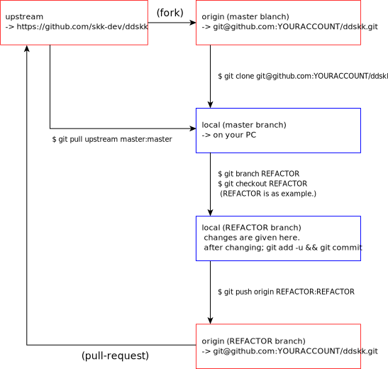
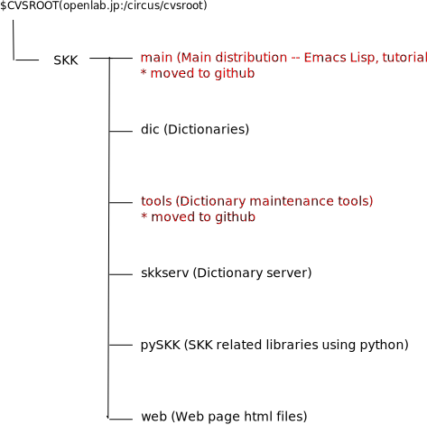

Start guide for SKK developers
Table of Contents
- Environment for developing device transition
- Development on git/github.com
- Development on cvs/openlab.jp
1. Environment for developing device transition
On Decenmber 2014, the devoping device for ddskk and skktools was transited from cvs to github.
2. Development on git/github.com
ddskk and skktools are developed on github.
The working flow is written in following document;
Working flow for ddskk develop on GitHub
(
https://github.com/skk-dev/ddskk/blob/master/READMEs/README.git.ja.org)
2.1. Repository structure of SKK on GitHub
The repository of DDSKK on GitHub is formed as follows.
The repository of upstream and origin are consist on GitHub server, and dealed through WEB brouser.
Conversely, local is on your PC, and can be switched using git checkout (branch-name). The modification in each branch is not influenced to other branches without git command.

2.2. Getting git (on UN*X)
On your UN*X like enviroment, git may not be installed.
For the setteing of git, refer http://git-scm.com/book/en/v2/Getting-Started-Installing-Git.
2.3. Getting git (on Windows)
Get Git for Windows from https://msysgit.github.io/
Uncheck [Windows Explorer integration] and [Associate .sh files to be run with Bash] on Select Components window.
DDSKK distribution include Windows batch file, therefore, to keep both LF and CRLF as newline character, check [Checkout as-is, commit as-is] on Configuring the line ending conversions window.
Again, you can use cygwin on Windows enviroment same as cvs.
Not that the home directories of commandline shell are different bitween cygwin and Git for Windows above.
The home directories are below when your login ID is given as LOGINID.
- Git for Windows: c:\Users\LOGINID\
- cygwin: c:\cygwin\home\LOGINID\ (or c:\cygwin64\home\LOGINID\
2.4. Getting source code through git
Simply, you can download as clone of DDSKK;
% git clone https://github.com/skk-dev/ddskk
To join to our development, see "Working flow for ddskk develop on GitHub."
To use GitHub you must get account of https://github.com. The detailes are shown on this site.
3. Development on cvs/openlab.jp
Except main (=> skk-dev/ddskk) and tools (=> skk-dev/skktools), the distributions are not different before introduction of git system. And main and tools will be got reflected to cvs on release.
3.1. CVS repository tree

3.2. How to get CVS
CVS is distributed at
http://ftp.gnu.org/non-gnu/cvs/
If you want to know more about CVS, visit the following site.
Do you know pcvs (pcl-cvs)? It's a GNU Emacs front-end to CVS. pcvs is included in Emacs 21 distribution.
3.3. How to get CVS
CVS is distributed at
http://ftp.gnu.org/non-gnu/cvs/
If you want to know more about CVS, visit the following site.
Do you know pcvs (pcl-cvs)? It's a GNU Emacs front-end to CVS. pcvs is included in Emacs 21 distribution.
Obtaining SKK CVS sources
First, you need to do login just once as a user guest (unless you have commit access).
% cvs -d :pserver:guest@openlab.jp:/circus/cvsroot login
When prompted, type guest as a CVS password.
CVS password: guest [RET]
File ~/.cvspass will hold your encrypted passwords. (*1)
To get your own working copy of the sources, use checkout command. (*2) To checkout sources in the trunk:
% cvs -d :pserver:guest@openlab.jp:/circus/cvsroot checkout skk/main
The working copy will be placed in `skk/main' directory.
% cd skk/main
Now you can type make. You can hack files too, but need to get commit access to SKK CVS repositories before committing your changes.
You can use update command from within your working directory to bring work tree in sync with the repository. Since your working copy remembers the root of the repository (i.e. openlab.jp:/circus/cvsroot), you can type the following:
% cd skk/main % cvs update -dP
3.4. How to check files into the repository (commit)
3.4.1. How to get commit (R/W) access to SKK CVS repositories
If you want a right to `commit' to SKK CVS repositories, write e-mail to skk-owner@ring.gr.jp with ssh2 public key generated with OpenSSH.
There's no need to login when you access the cvs server via ssh. All committers share a unique account called skk-cvs. You can checkout sources by the following command.
% cvs -d:ext:skk-cvs@openlab.jp:/circus/cvsroot checkout skk/main
Similarly You can update your working sources with the following command.
% cvs update -dP
3.4.2. Commit
Please follow the following procedure before you commit changes.
- Make sure your working copy is compiled and installed without problem.
- Make sure the installed SKK works in simple tasks (at least starts and exits normally).
- Write e-mail to skk@ring.gr.jp and tell briefly what changes you have made using the modified revision of SKK.
- Update the ChangeLog file in English (or in Japanese if you like) (*3), and do commit.
$ cd skk/main $ cvs commit -m "Update." ChangeLog $ cvs commit -m "write about your changes." skk.el
Footnotes
*1
Your working copy has a directory called `CVS', which is used internally by CVS. This holds information of the user name, the root of the repository (i.e. openlab.jp:/circus/cvsroot), the name of the repository, etc. (*3) Usually you can set the `$CVSROOT' environment variable to an absolute path to the root of the repository, but the -d option and the `CVS/Root' file both override the `$CVSROOT' environment variable. If -d option differs from `CVS/Root', the former is used.
*2
You can write in ~/.cvsrc
cvs -z3
The -z3 option enables compression during transit. Digit right after z represents compression rate, and -z9 means highest. However, -z3 may be better as -z9 forces a significant overhead to pserver.
*3
In pcl-cvs, a GNU Emacs front end to CVS, press C (cvs-mode-changelog-commit) and it tries to provide appropriate default log messages by looking at the `ChangeLog's.